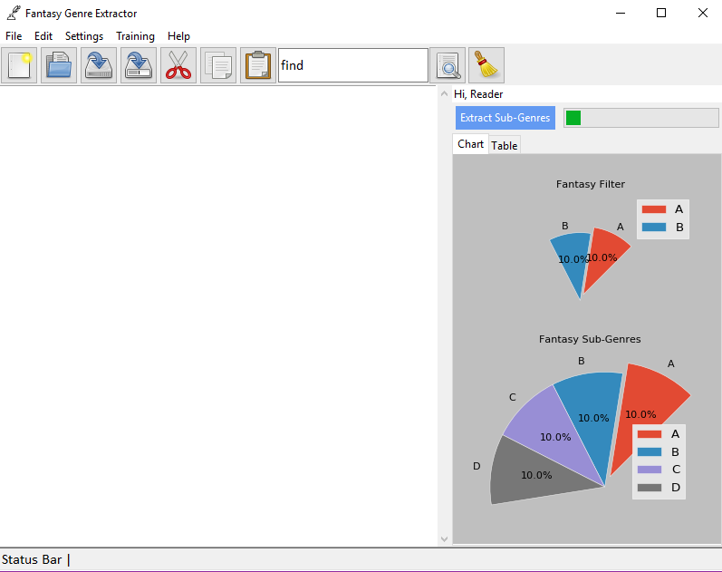

Tutorial¶
Application On Start-up¶

Initial form on start-up
Setting Up The Corpus¶

Initial
Train The Fantasy Filter¶
Open the fantasy filter training form

Initial fantasy filter training form
Train Sub Genre Classifier¶
Open the fantasy sub extractor training form

Initial fantasy sub extractor training form
Extract Genres From Text¶

Open text file or copy and paste text into the note pad.
Click “Extract Sub-Genres”
Step 1: Checking main genre¶

Initial
Step 2: Extracting main genre¶

Initial